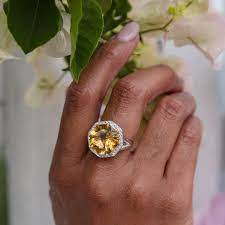
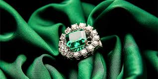
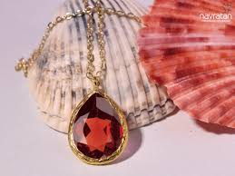
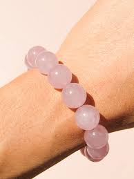
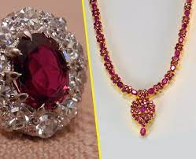
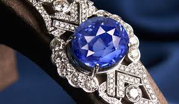

Gemstones have played numerous roles in the myths and tales of human societies throughout history. Although some are believed to have unique powers, each shares a typical beauty, distinct with a unique color, birthplace, and story. Gems come in every color of the rainbow and are gathered from all edges of the globe, with each colored gemstone possessing a one-of-a-kind production of lovely color.
Amethyst

The ancient Greeks and Romans believed that Amethyst would prevent Bacchus's invigorating powers and keep the user clear-headed and quick-witted. For centuries, amethyst has been related to several myths, tales, and religious beliefs in many cultures. It is considered the birthstone for February. Not only is it the beautiful color that makes this gem so prominent, but it is also extensively offered in different shapes and sizes, making it more affordable. Amethyst matches warm and cool colors, and therefore, it looks terrific in yellow and white metals. This one-of-a-kind ability suggests that it boosts practically every color in your wardrobe.
Aquamarine
Aquamarine belongs to the beryl family of minerals, which also includes emerald. It is valued for its clarity, brilliance, and exquisite color variations that range from pale blue to deep blue-green. The most prized aquamarines possess a vibrant, intense blue hue reminiscent of a clear sky or a tranquil tropical lagoon. In terms of its physical properties, aquamarine has a hardness rating of 7.5 to 8 on the Mohs scale, making it a relatively durable gemstone suitable for everyday wear. It has a vitreous luster and is often faceted to enhance its brilliance and reflectivity.
Citrine
Citrine is a beautiful and vibrant gemstone that is known for its warm and sunny yellow color. It is a variety of quartz, which is one of the most abundant minerals on Earth. The name "citrine" is derived from the Latin word "citrus," meaning "yellow," which perfectly describes the gemstone's hue. Citrine ranges in color from pale yellow to deep golden tones, and some specimens may exhibit hints of orange or brown. The intensity of the color can vary, and the most valuable citrines are those that display a rich, vivid yellow hue. One of the unique features of citrine is that it is often found in larger sizes, making it a popular choice for statement jewelry pieces. Its hardness rating of 7 on the Mohs scale makes it relatively durable and suitable for everyday wear.
Emerald
Emerald is a captivating and highly prized gemstone known for its mesmerizing green color. It belongs to the beryl family of minerals, which also includes gemstones like aquamarine and morganite. The name "emerald" is derived from the Greek word "smaragdos," meaning "green gem." What sets emerald apart is its rich and vibrant green hue, which ranges from a soft, pale green to a deep, intense green. The color is often described as "emerald green," and it is caused by trace amounts of chromium and sometimes vanadium within the crystal structure. Emerald is known for its exceptional beauty and transparency. It has a vitreous to oily luster and is often cut into various shapes, including step cuts like the classic emerald cut, as well as round, oval, and pear shapes. Emeralds can also be found in cabochon cuts and used as beads in jewelry.
Garnet
Garnet is a beautiful gemstone that comes in a variety of colors, with the most commonly known being deep red. However, it is important to note that garnet is actually a group of closely related minerals rather than a single gemstone. The name "garnet" is derived from the Latin word "granatum," meaning "seed," as the red garnet crystals were thought to resemble pomegranate seeds. While red garnet is the most well-known variety, garnets can also be found in shades of orange, yellow, green, purple, brown, and even colorless. The different colors are caused by varying chemical compositions within the garnet group of minerals. Each color variation within the garnet family has its own unique name, such as almandine (red), spessartite (orange), and tsavorite (green).
Quartz
Quartz is a mineral that is one of the most abundant on Earth. It belongs to the silica group of minerals and is composed of silicon dioxide (SiO2). Quartz comes in a wide range of colors and varieties, each with its own unique characteristics and uses. One of the most well-known varieties of quartz is clear quartz, which is colorless and transparent. Clear quartz is prized for its clarity and often used as a substitute for diamond in jewelry. It is also commonly used in the production of optical instruments, such as lenses and prisms, due to its high clarity and ability to transmit light. Quartz can also occur in a variety of other colors, including smoky quartz (brown to gray), amethyst (purple), citrine (yellow to orange), rose quartz (pink), and aventurine (green). Each color variation is caused by different impurities or trace elements present during the formation of the quartz crystals.
Ruby
Ruby is a precious gemstone known for its vibrant red color and exceptional beauty. It is a variety of the mineral corundum, which is composed of aluminum oxide with traces of chromium that give ruby its characteristic red hue. The name "ruby" is derived from the Latin word "ruber," meaning "red." Ruby is highly valued for its intense red color, which can range from a deep crimson to a lighter, more pinkish shade. The finest rubies are often described as "pigeon's blood" red, which is a rich, pure red with a hint of blue. This color is highly sought after and commands premium prices. The hardness of ruby is second only to diamond, scoring 9 on the Mohs scale. This exceptional hardness makes ruby a durable gemstone suitable for everyday wear. Ruby has a vitreous to subadamantine luster and is often faceted to enhance its brilliance.
Sapphires
Sapphires are exquisite gemstones known for their captivating blue color, although they can actually be found in a range of colors, including yellow, pink, purple, orange, and green. They belong to the mineral species corundum, which is composed of aluminum oxide with traces of different elements that give sapphires their various colors. The name "sapphire" is derived from the Latin word "sapphirus," meaning "blue stone." Blue sapphires are the most well-known and highly sought-after variety. They come in a spectrum of shades, from light sky blue to deep royal blue. The intensity and saturation of the blue hue are important factors in determining the value of a blue sapphire. The most valuable blue sapphires exhibit a rich and vivid blue color.